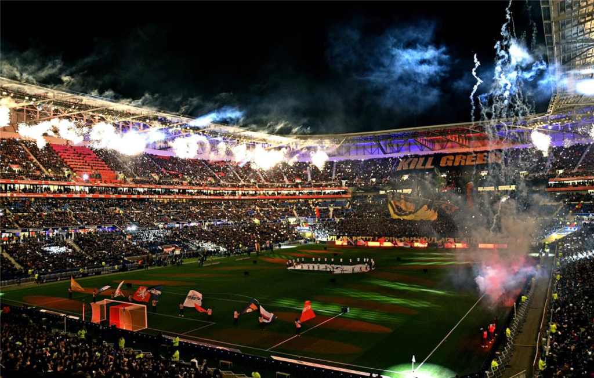
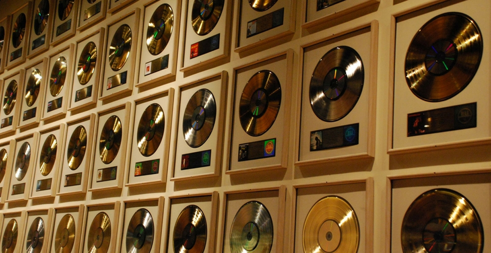

Centres d'intérêt

L'Informatique & Hardware
Au-delà des cours, je suis passionné par l'évolution du matériel (composants PC) et les nouvelles technologies. J'aime comprendre comment les machines fonctionnent, du montage physique à l'installation logicielle.

Football
Pratique en club et supporter. Le sport m'a appris l'importance de la cohésion d'équipe, la stratégie et la persévérance face à la difficulté, des qualités essentielles dans un projet informatique.

Musique
Une grande passion qui m'accompagne au quotidien. Que ce soit pour la concentration lors de sessions de travail technique ou pour la créativité, la musique occupe une place importante dans ma vie.